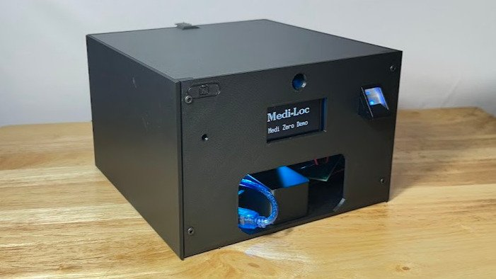
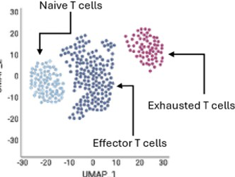
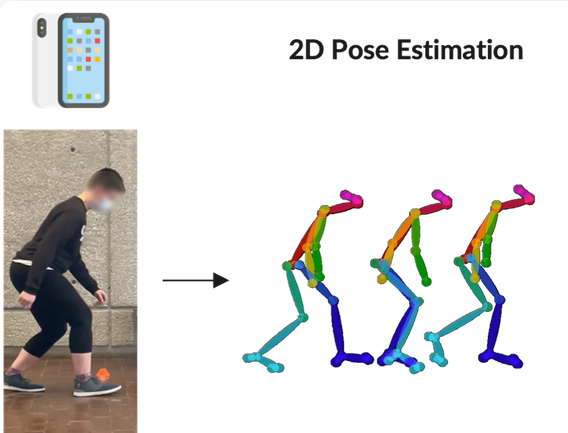

Experience
May 2025 – Present
Medi-Loc LLC
I co-founded Medi-Loc to build Medi-Zero, a smart medication dispenser that makes the right dose available at the right time.
- Architected the custom mainboard schematic and production PCB layout in KiCad, taking the device from concept to a functional prototype on a reliable, low-cost hardware platform capable of precise actuation.
- Developed low-level C/C++ embedded firmware for real-time sensor polling, motor timing, and system-level fault handling.
- Pitched the integrated hardware-software architecture at state and national engineering competitions, securing a U.S. patent and several startup grants.

May 2024 – Aug 2026
Bhasin Systems Biomedicine Lab, Emory University
A student-run team developing machine learning models for early-stage cancer biomarker detection from sparse RNA sequencing data.
- Engineered a memory-efficient machine learning pipeline in PyTorch to get past computational bottlenecks in highly sparse single-cell transcriptomic datasets, optimizing dimensionality reduction and achieving high predictive precision for a biological aging model.
- Benchmarked the algorithm's performance, error rates, and sparse-data handling against traditional statistical methods, culminating in a shared first-author publication in Frontiers in Aging (2025).

Jul 2024 – Aug 2024
ViTAL Lab, Georgia Tech
A summer research experience building data pipelines that extract joint angles and gait data from video using machine learning.
- Developed a Python computer-vision and time-series processing pipeline with NumPy and Pandas, enabling accurate, quantitative biomechanical analysis from continuous video recordings.
- Replaced slow manual interpretation of complex movements with automated data extraction that generates 2D visualizations, significantly speeding up the lab's research workflow.

Jun 2026 – Jul 2026
WhizLearning Kids
A summer coding camp in Atlanta.
- Planned, tested, and taught lessons on Python and JavaScript coding to students of all ages.
- Led and supervised groups of campers alongside a team of counselors, building leadership and teamwork skills while adapting explanations to each student's level.